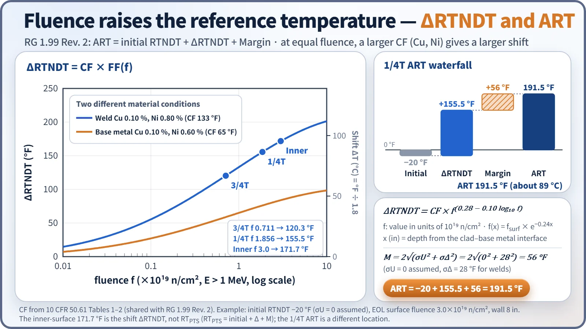
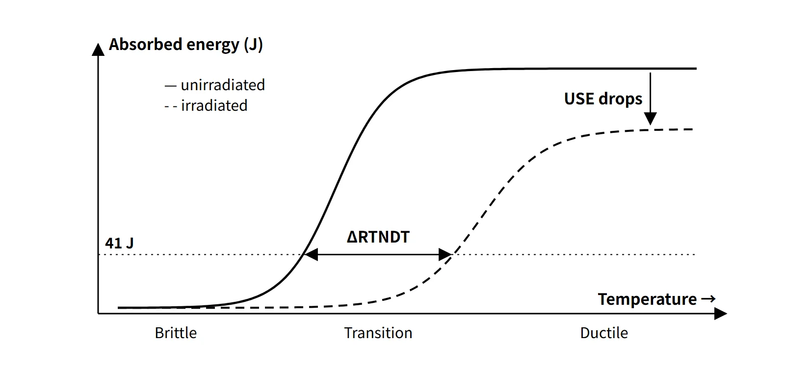

Fuel & Materials · C-FM-003
Nil-Ductility Transition Temperature (NDTT · RTNDT · DBTT) — From Drop-Weight and Charpy Tests to Irradiation-Shifted ART and P-T Curves
How the drop-weight and Charpy tests fix the reference temperature RTNDT, and how irradiation shifts it to the adjusted reference temperature used in P-T curves and PTS evaluation.
The nil-ductility transition temperature (NDTT, TNDT) is the highest temperature at which a specimen breaks in the drop-weight test; the reference nil-ductility transition temperature (RTNDT) is the fracture-toughness reference temperature of reactor vessel material, set under ASME III NB-2331 by combining the drop-weight test and Charpy impact tests; and the ductile-to-brittle transition temperature (DBTT) is the general name for a representative temperature of the transition region of the Charpy curve, where the fracture mode changes from ductile to brittle.
The three terms describe the same phenomenon — ferritic steel turning brittle at low temperature — captured by different tests. Reactor vessel regulation uses RTNDT as the reference point of the fracture-toughness curves and tracks its irradiation-induced increase (ΔRTNDT) throughout the vessel's life.
Principle and mechanism
The ductile-to-brittle transition and DBTT
In body-centred cubic (BCC) ferritic steel the yield strength rises sharply at low temperature, so cleavage fracture occurs before plastic deformation. Plotting Charpy absorbed energy against temperature gives an S-shaped curve with three regions:
- Lower shelf (brittle): cleavage fracture surface, absorbed energy from a few J to a few tens of J
- Transition region: mixed ductile and brittle fracture surface; energy changes steeply with temperature
- Upper shelf (ductile): fibrous fracture surface; the absorbed energy here is the upper-shelf energy (USE)
DBTT represents the transition region, but there are several definitions: the 41 J (30 ft-lb) temperature T41J, the 68 J (50 ft-lb) temperature, the 0.89 mm (35 mils) lateral-expansion temperature, the 50 % ductile-fracture-appearance temperature (FATT) and others — so the criterion should always be stated. A Charpy specimen is a 10×10×55 mm bar with a 2 mm deep 45° V-notch, broken by a pendulum hammer to measure absorbed energy, lateral expansion and percent ductile fracture (ASTM E23).
NDTT — the drop-weight test
In the drop-weight test (ASTM E208) a brittle weld bead is deposited on the surface of a plate specimen and notched; a weight is dropped at a set temperature to see whether the crack starting in the bead runs across and breaks the specimen. The highest temperature at which the specimen breaks is TNDT (NDTT), and the specimen must not break at a temperature 5 °C (10 °F) higher. Because it observes the arrest of a sharp crack, it is closer to real crack behaviour than the blunt-notched Charpy test.
RTNDT — the NB-2331 procedure
TNDT alone cannot guarantee toughness in the upper part of the transition region, so NB-2331 combines the two tests:
- From the drop-weight results, set TNDT at a temperature at or above the NDT.
- If at a temperature no higher than TNDT + 33 °C (60 °F) three Charpy specimens all reach at least 68 J (50 ft-lb) and at least 0.89 mm (35 mils) lateral expansion, then RTNDT = TNDT.
- If not, test further sets of three at higher temperatures to find the temperature TCv at which the conditions are met, and take RTNDT = TCv − 33 °C (60 °F).
So RTNDT = max(TNDT, TCv − 33 °C), and RTNDT is always at least TNDT. 60 °F is a temperature difference, so it converts to 33 °C (do not confuse it with the absolute-temperature conversion, 15.6 °C). 10 CFR 50 Appendix G and 50.61 cite this procedure for the unirradiated RTNDT.
![Conceptual Charpy curves of absorbed energy from 0 to 200 J against test temperature from −150 to 200 °C: the unirradiated curve crosses 41 J at −30 °C with an upper shelf of 170 J, the irradiated curve crosses 41 J at +56 °C with an upper shelf of 128 J, giving ΔRTNDT = ΔT41J of about 86 °C (155 °F); lower-shelf, transition and upper-shelf zones are marked, a photo shows brittle and ductile fracture surfaces of Charpy bars, and a card lists the three NB-2331 steps ending in RTNDT = max(TNDT, TCv − 33 °C)](../../assets/images/concepts/c-fm-003-rtndt-dbtt/fig1-charpy-transition-shift.webp)
Irradiation embrittlement — ΔRTNDT and USE reduction
When beltline vessel material receives fast neutrons (E > 1 MeV), atomic displacements create point defects and dislocation loops, and copper-rich precipitates and Ni-Mn-Si clusters form, hardening the material. As a result the Charpy curve shifts to the right (higher temperature) and the upper shelf drops. The key point is that the transition temperature rises and the USE falls at the same time.
For regulatory purposes ΔRTNDT is not measured by repeating the drop-weight test; it is defined as the difference in the 41 J (30 ft-lb) index temperature of the mean Charpy curves before and after irradiation (10 CFR 50 App. G II.E), and surveillance specimens measure it.
ART — the RG 1.99 Rev. 2 prediction
The post-irradiation RTNDT is called the adjusted reference temperature (ART). RG 1.99 Rev. 2 (1988) and 10 CFR 50.61 share the prediction equations and CF tables.
- ART = initial RTNDT + ΔRTNDT + Margin
- ΔRTNDT = CF × f^(0.28 − 0.10 log f) (f in 10¹⁹ n/cm², E > 1 MeV)
- CF (chemistry factor, °F): table values by weld or base metal as a function of Cu and Ni content (wt%). If the composition is unknown, assume Cu 0.35 % and Ni 1.0 %.
- Attenuation through the wall: f(x) = fsurf × e^(−0.24x) (x: depth from the clad–base metal interface, inches)
- Margin = 2√(σU² + σΔ²): σΔ = 28 °F (welds), 17 °F (base metal), not exceeding half of ΔRTNDT. If the initial value was measured, σU is set by the test precision.
- With two or more credible sets of surveillance data, a material-specific CF can be re-derived from the measured ΔRTNDT and σΔ can be halved (14 °F and 8.5 °F).
Worked example (example conditions): circumferential weld, Cu 0.10 % and Ni 0.80 % (CF = 133 °F), initial RTNDT = −20 °F (σU = 0 assumed), end-of-life inner-surface fluence 3.0×10¹⁹ n/cm², wall thickness 8 in.
| Location | f (10¹⁹) | FF | ΔRTNDT | ART |
|---|---|---|---|---|
| 1/4T (2 in) | 1.86 | 1.170 | 155.5 °F | 191.5 °F (about 89 °C) |
| 3/4T (6 in) | 0.71 | 0.904 | 120.3 °F | 156.3 °F (about 69 °C) |
| Inner surface | 3.0 | 1.291 | 171.7 °F | RTPTS 207.7 °F |
The margin is 2 × 28 = 56 °F. The USE reduction is predicted separately with Figure 2 of RG 1.99 Rev. 2 (a function of Cu and fluence).

What it means in a plant
Surveillance testing — checking the prediction with measurements
The prediction equations are statistical averages, so specimens of the actual vessel materials are placed near the core and withdrawn and tested periodically.
- Specimens: Charpy, tensile and fracture-toughness specimens of the base metal, weld and heat-affected zone expected to embrittle most over the life, plus neutron dosimeters and temperature monitors (melt wires)
- Location: near the vessel inner wall in the beltline (capsule holders depending on reactor type). They are placed with a lead factor of 1 to 3 so that the specimens are irradiated ahead of the vessel. Lead factor = neutron flux at the specimen location / maximum neutron flux at the vessel inner wall.
- Withdrawal: the larger the expected ΔRTNDT, the more capsules are planned (3, 4 or 5), and the first test uses the capsule with the highest lead factor.
- Evaluation: the measured 41 J shift (ΔRTNDT) and USE reduction are compared with the predictions and fed into the P-T curves and the PTS evaluation.
P-T limit curves and operation
RTNDT matters because the fracture-toughness reference curves in the ASME XI appendices are functions of (T − RTNDT); for example KIc = 33.2 + 20.734 exp[0.02(T − RTNDT)] (ksi√in, °F). Assuming a reference flaw at 1/4T depth, the pressure–temperature region that satisfies 2KIm + KIt < KIc during heatup and cooldown is the P-T limit curve.
- As ART rises, the curve moves to higher temperature and the allowable pressure at low temperature decreases.
- During cooldown the inner surface is in tension, so the 1/4T ART governs; during heatup the 3/4T ART governs.
- For core criticality, 40 °F is added to the App. G limit, and the low-temperature overpressure protection (LTOP) setpoints are tied to these curves.
Relation to PTS
Pressurized thermal shock (PTS) is the condition of repressurization during overcooling; RTPTS, calculated with the inner-surface fluence, is compared with the screening criteria of 270 °F (plates, forgings, axial welds) and 300 °F (circumferential welds). If exceedance is projected, the responses are flux reduction, detailed fracture-mechanics evaluation and recovery annealing.
Regulatory and design criteria
The references below are ASME Code and US NRC requirements, given as examples of how these temperatures are used in design and regulation.
| Basis | Key point |
|---|---|
| ASME III NB-2331 | Unirradiated RTNDT (drop-weight + Charpy 68 J and 0.89 mm, TNDT + 33 °C) |
| 10 CFR 50 App. G | ΔRTNDT = difference in 41 J index temperature; USE initial ≥ 102 J and ≥ 68 J over life; P-T limits and minimum temperatures (Table 1) |
| 10 CFR 50 App. H | ASTM E185 surveillance if end-of-life fluence > 10¹⁷ n/cm²; report within 18 months of withdrawal; some specimens made optional by the 2020 revision |
| RG 1.99 Rev. 2 (1988) | ART, CF tables, fluence factor, margin, USE reduction prediction |
| 10 CFR 50.61 / 50.61a / 50.66 | PTS screening criteria, alternative rule, recovery annealing |
The prediction equation in use is still RG 1.99 Rev. 2; the alternative PTS rule 50.61a was added in 2010, and the 2020 revision of App. H made the heat-affected-zone, correlation-monitor and temperature-monitor specimens optional.
Easily confused pairs
| NDTT (TNDT) | RTNDT | DBTT | ART | |
|---|---|---|---|---|
| Test | Drop-weight (E208) | Drop-weight + Charpy | Charpy and others | Calculation (initial + Δ + M) |
| Criterion | Highest break temperature | NB-2331 | Various: 41 J, FATT … | RG 1.99 Rev. 2 |
| Use | Input to RTNDT | Reference point of toughness curves | General material comparison | P-T curves, PTS evaluation |
| Irradiation effect | Not re-measured directly | Updated by ΔRTNDT | Curve shifts | Value including irradiation |
Key points at a glance
- NDTT: the highest temperature at which the specimen breaks in the drop-weight test (ASTM E208).
- RTNDT: NB-2331 — if three Charpy specimens at ≤ TNDT + 33 °C reach ≥ 68 J and ≥ 0.89 mm, RTNDT = TNDT; otherwise TCv − 33 °C → RTNDT = max(TNDT, TCv − 33 °C).
- DBTT: representative temperature of the transition region of the Charpy S-curve; state the criterion (41 J, 50 % FATT, etc.).
- Irradiation effect: fast neutrons → hardening → curve shifts right (ΔRTNDT) and USE drops; sensitive to Cu, Ni and P.
- Measuring ΔRTNDT: the difference in the 41 J (30 ft-lb) temperature before and after irradiation (App. G).
- ART = initial RTNDT + CF·f^(0.28−0.10 log f) + 2√(σU² + σΔ²); attenuation e^(−0.24x).
- Surveillance: lead factor 1–3, 3 to 5 capsules, specimens plus dosimeters and temperature monitors, report after withdrawal.
- Requirements: USE ≥ 102 J (initial) and ≥ 68 J (over life), P-T curves (ASME XI App. G), RTPTS 270/300 °F.
- If limits are exceeded: flux reduction, detailed evaluation and additional fracture-toughness tests, recovery annealing.
